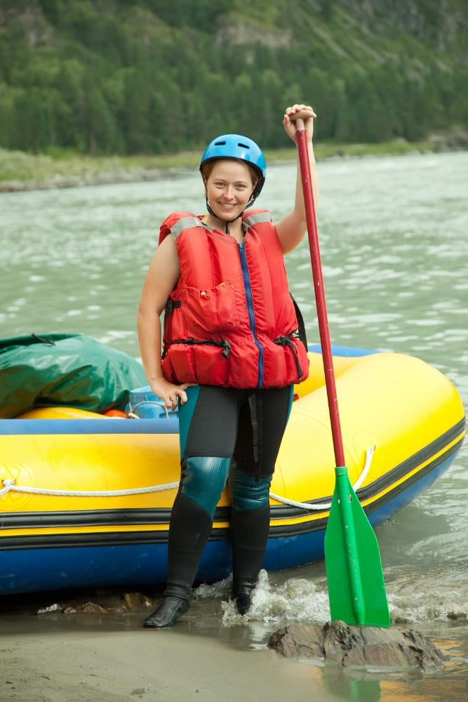

In 1998, Jack Murray transformed his love for rivers into a bold venture called Torrent Trials, operating out of a humble riverside cabin. Jack’s passion for navigating rapids and sharing the thrill of white-water rafting led him to create a business devoted to delivering unforgettable outdoor experiences. Starting with a borrowed raft and sheer determination, he crafted routes that showcased the untamed beauty of his hometown’s waterways, quickly earning a reputation for adventure and safety.
The heart of Torrent Trials was its team of skilled guides, united by their love for the wilderness and the camaraderie that defined the company culture. As demand grew, Jack expanded the operations, offering diverse rafting experiences tailored to beginners, families, and thrill-seekers alike. The team's dedication made customers feel part of a larger adventure community, contributing to the company’s growing success.

Jack also recognized the importance of preserving the rivers that fueled Torrent Trials’ success. He partnered with conservation groups to promote eco-friendly practices and organized community programs to educate people about the environment. These efforts not only protected the natural beauty of the region but also positioned Torrent Trials as a leader in sustainable tourism.
Today, Torrent Trials stands as a symbol of passion and perseverance, continuing to push the boundaries of adventure tourism. From thrilling rapids to tranquil river escapes, the company embodies Jack’s dream of connecting people with the wild in a meaningful way, ensuring his legacy lives on for generations to come.
Let me know if you'd like further adjustments or details! üö£‚Äç‚ôÇÔ∏è